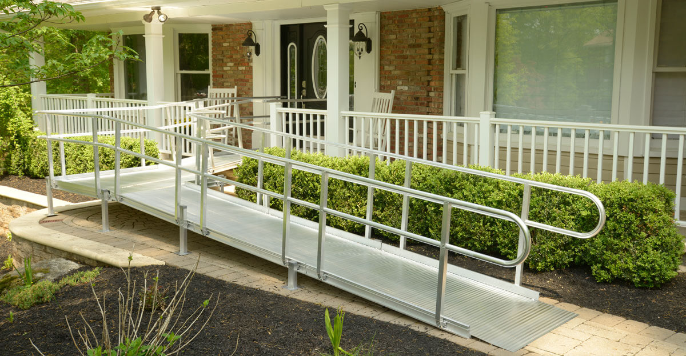
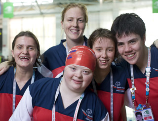
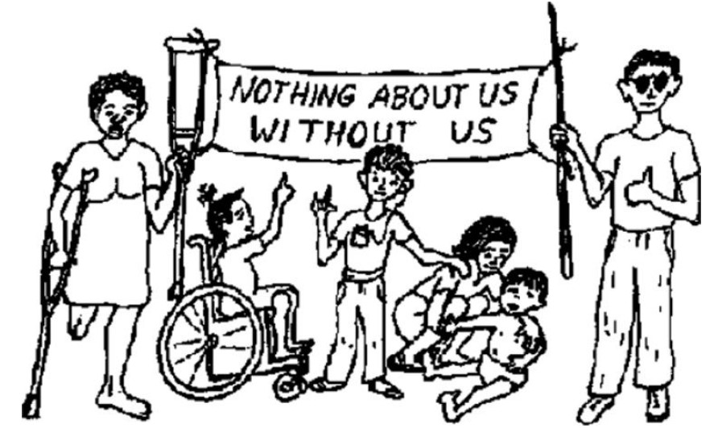

Mick McQuaid and Madison Russell
2022-03-25
But first, why do we care about these four things?
How do we think of disability?
What viewpoint do we bring?
Physical and sensory disabilities
Motor impairments

Cognitive disabilities
such as those giving rise to some Special Olympics events, some of whose participants are pictured at right

Spectrum of abilities
Disability experiences

This slideshow was produced with reveal.js using the moon theme.
pandoc was used to convert the source markdown to html.
The source can be found at the same URL as the presentation by
substituting index.md for index.html